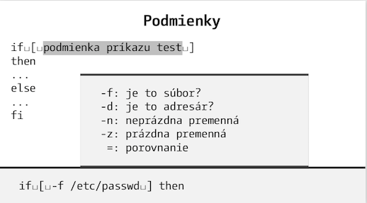

Tiež ste zabudli prekérnu syntax v linuxovom shelli? Vyše 60 ťahákov s jednotlivými oblasťami na kartičkách veľkosti vizitky!
Vizitkár pokrýva:
- základnú syntax shellu
- pokročilé techniky: expanzie premenných, hromadná práca so súbormi
- niektoré často používané finty
- prehľad užitočných nástrojov
- sumár syntaxe k
awk a sed
Stiahnite si
- vizitkár ako PDF. Na jednej strane A4 je 10 štandardných vizitiek. Stačí vytlačiť a orezať!
- PDF, kde je každá strana ako vizitka 5x9 cm.
Ukážka vizitky
%